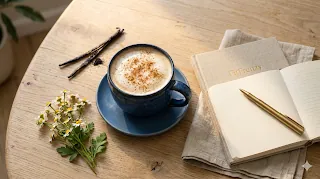
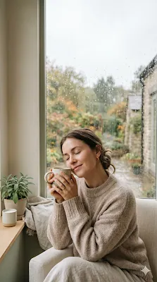

Élixirs naturels · 6 min de lecture
Le Secret de l'Océan Calme : Votre Élixir Naturel Anti-Stress à Faire à la Maison
Avez-vous déjà eu cette sensation que votre cerveau ressemble à un onglet de navigateur qui ne répond plus, avec 40 autres fenêtres ouvertes en arrière-plan ? Ce poids sur la poitrine dès le réveil, ou cette agitation mentale qui vous empêche de sombrer dans un sommeil réparateur ?
On nous dit souvent de "souffler", de "prendre du temps pour soi". Mais entre le travail, les responsabilités et le bruit incessant du monde moderne, souffler ne suffit plus. On a besoin d'un véritable interrupteur interne.
Et si cet interrupteur se trouvait simplement dans votre cuisine ?
Aujourd'hui, je vous emmène à la découverte de ce que j'appelle affectueusement "L'Élixir de l'Océan Calme". Ce n'est pas juste une boisson, c'est une caresse pour votre système nerveux.
Le Problème : Pourquoi sommes-nous tous au bord de l'implosion ?
Le stress n'est pas qu'une vue de l'esprit. C'est une réaction chimique. Lorsque nous sommes sous pression, notre corps produit du cortisol et de l'adrénaline. À petite dose, c'est utile pour réagir. Mais en continu ? C'est un poison silencieux qui fatigue le cœur, brouille la digestion et éteint notre joie de vivre.
Le problème des solutions classiques (caféine pour tenir le coup, somnifères pour s'éteindre), c'est qu'elles ne font que masquer les symptômes sans nourrir le terrain.
La Promesse : Un retour au calme sans artifice
Ce que je vous propose avec cet élixir, ce n'est pas une potion magique qui effacera vos problèmes de factures ou de planning. C'est un outil physiologique. En utilisant des ingrédients ciblés, nous allons envoyer un signal clair à votre corps : "Tu es en sécurité, tu peux relâcher la garde."
Les bénéfices attendus ?
Un apaisement mental dans les 20 minutes suivant la dégustation.
Une diminution de la sensation de "boule au ventre".
Un endormissement plus fluide si consommé le soir.
Une saveur réconfortante qui remplace avantageusement les grignotages émotionnels.
Pourquoi privilégier l'approche naturelle ?
La nature possède une intelligence que les laboratoires tentent souvent d'imiter. Les plantes ne se contentent pas de "bloquer" un récepteur nerveux ; elles apportent des nutriments, des antioxydants et des principes actifs qui travaillent en synergie. C’est la différence entre une alarme que l’on coupe brutalement et une musique qui s’estompe doucement pour laisser place au silence.

Les Ingrédients : Vos Alliés Sérénité
Pour cet élixir, j'ai sélectionné des ingrédients qui agissent sur différents leviers du stress :
L'Ashwagandha (Poudre de racine) : C'est la reine des plantes "adaptogènes". Elle aide littéralement votre corps à s'adapter au stress sans s'épuiser.
Le Lait d'Amande (ou d'Avoine) : Riche en magnésium, le minéral de la détente par excellence.
La Cannelle de Ceylan : Elle régule la glycémie. Un taux de sucre stable évite les pics d'anxiété liés aux fringales.
Le Miel de Lavande ou de Forêt : Pour la douceur et ses propriétés apaisantes ancestrales.
Une touche de Muscade : Un sédatif naturel léger utilisé depuis des siècles pour calmer les esprits agités.
La Recette de "L'Élixir de l'Océan Calme"
Voici comment préparer ce moment de pur bien-être. C'est simple, rapide, et l'odeur qui se dégagera de votre cuisine commencera déjà à vous détendre.
Ingrédients (pour 1 personne) :
250 ml de lait végétal (amande sans sucre ajouté de préférence).
1/2 cuillère à café de poudre d'Ashwagandha.
1/2 cuillère à café de cannelle de Ceylan en poudre.
Une petite pincée de noix de muscade fraîchement râpée.
1 cuillère à café de miel brut.
Optionnel : 3-4 pétales de rose séchés pour la poésie.
Étapes de préparation :
Chauffez avec douceur : Versez le lait végétal dans une petite casserole. Faites chauffer à feu doux. Il ne doit surtout pas bouillir pour préserver les nutriments.
L'infusion des poudres : Ajoutez l'ashwagandha, la cannelle et la muscade. Fouettez vigoureusement (un petit mousseur à lait manuel fait des merveilles ici) pour obtenir une texture onctueuse et sans grumeaux.
Le secret du timing : Une fois le mélange bien chaud et fumant, retirez du feu.
La touche finale : Laissez tiédir une minute avant d'ajouter le miel. Le miel perd ses propriétés au-delà de 40°C, soyez patient !
Servir : Versez dans votre tasse préférée. Saupoudrez d'un peu de cannelle ou de pétales de rose.
Comment utiliser cet élixir pour un maximum d'efficacité ?
Le contexte compte autant que le contenu. Ne buvez pas cet élixir en répondant à vos e-mails ou en scrollant sur les réseaux sociaux.
Le rituel idéal :
Le moment : En fin d'après-midi (le "down" de 17h) ou 1 heure avant le coucher.
L'environnement : Tamisez les lumières, posez votre téléphone dans une autre pièce.
L'action : Tenez la tasse entre vos deux mains. Sentez la chaleur se diffuser dans vos paumes. Inspirez l'arôme de cannelle. Buvez par petites gorgées lentes.

À qui s'adresse ce rituel ?
Aux actifs surmenés qui n'arrivent pas à "décrocher".
Aux étudiants en période d'examen.
À toutes les personnes sensibles aux changements de saison.
À ceux qui cherchent une alternative saine au verre de vin ou au café de trop.
Précautions importantes
Bien que naturel, cet élixir contient des plantes actives. L'ashwagandha est déconseillé aux femmes enceintes ou allaitantes, ainsi qu'aux personnes souffrant de troubles de la thyroïde. En cas de doute ou de traitement médical en cours, demandez toujours l'avis de votre médecin.
FAQ : Vos questions sur l'Élixir Anti-Stress
Puis-je utiliser du lait de vache ? Oui, c'est possible, mais le lait végétal (notamment d'amande) est souvent plus digeste et contient du magnésium qui complète parfaitement l'action relaxante.
Où trouver de l'Ashwagandha ? Vous en trouverez facilement en magasin bio ou dans les herboristeries en ligne. Choisissez une poudre certifiée biologique.
Est-ce que ça fait dormir ? Cela ne vous "assommera" pas comme un médicament. Cela réduit l'agitation. Si vous le prenez le matin, vous serez calme mais alerte. Si vous le prenez le soir, cela facilitera la transition vers le sommeil.
Conclusion : Le changement commence par une tasse
Nous oublions souvent que nous sommes des êtres biologiques avant d'être des machines productives. S'offrir ce genre de pause, c'est envoyer un message de respect à son propre corps. Le stress est inévitable, mais la façon dont nous y répondons est un choix.
Ce soir, ne vous contentez pas de subir votre fatigue. Prenez ces 5 minutes pour préparer votre élixir. Votre système nerveux vous remerciera.
Envie d'aller plus loin dans votre transformation bien-être ? Le stress est souvent lié à nos habitudes profondes et à notre environnement. Si vous voulez reprendre le contrôle total sur votre énergie et votre sérénité, j'ai condensé des années de recherches et de routines naturelles dans mes guides pratiques.
Passez à l'action : Découvrez mes secrets pour une vie plus saine et alignée. Mes ebooks sont conçus pour vous accompagner pas à pas, même si vous partez de zéro.
Si la nature ne l'a pas créé, alors ne le consomme pas !
📚 Je suis auteur bien-être sous le pseudo Chest0 JM.S, et mes ouvrages sont disponibles sur Amazon.
🔗 Retrouve tout mon univers ici :
👉
✨ Commence aujourd’hui à nourrir ton système nerveux avec douceur, intelligence et naturel.
« Travail assis : pauses actives »
👉 Créez votre planning de pauses gratuit : chest0.fr/outils/pauses-actives/
« Journal du sommeil »
👉 Tenez votre journal du sommeil sur 7 jours, gratuitement : chest0.fr/outils/journal-sommeil/
« Les 20 aliments des centenaires » et « Microbiote intestinal »
👉 Mes livres de recettes naturelles, élixirs et détox : chest0.fr/pages/livres.html
« 4 habitudes à observer au quotidien »
👉 Faites le point sur vos habitudes avec l'outil gratuit : chest0.fr/outils/equilibre-quotidien/
Plus de 40 recettes d'élixirs dans les livres Chest0.
Voir les livres